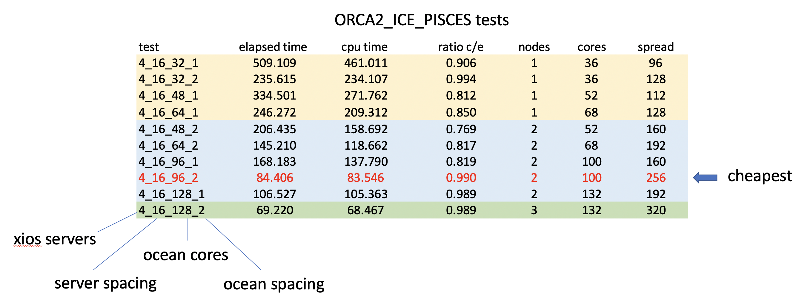
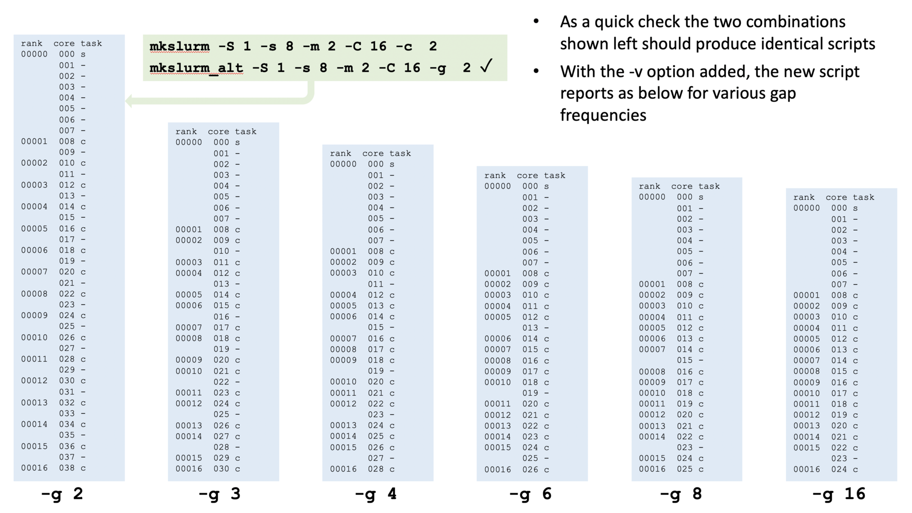
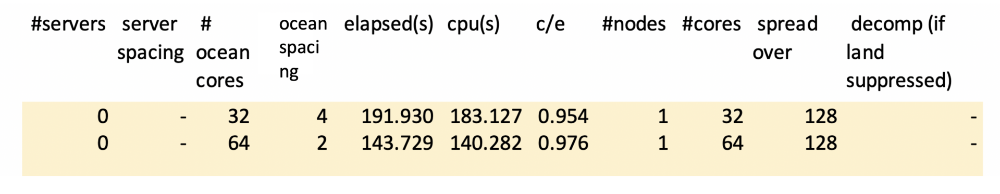
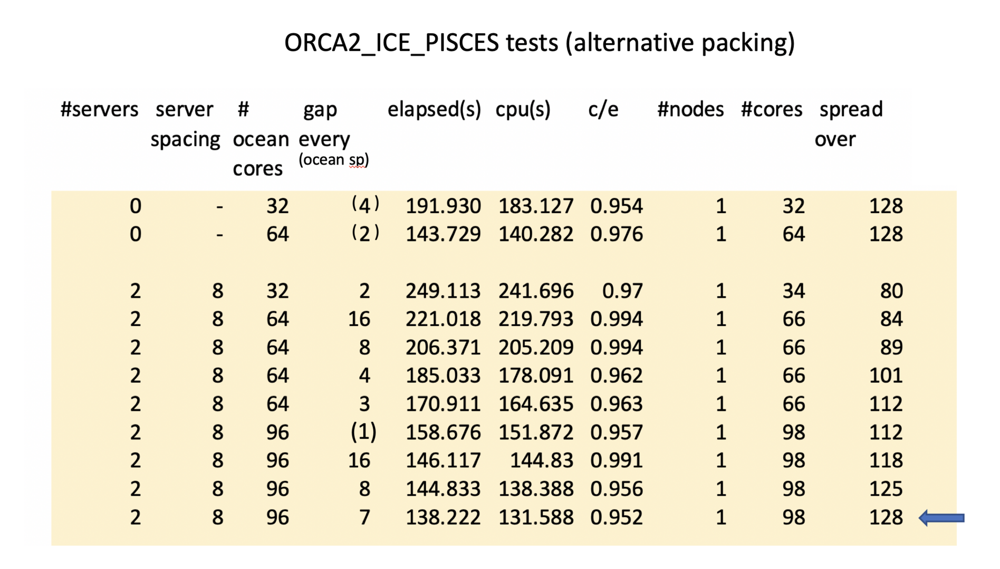
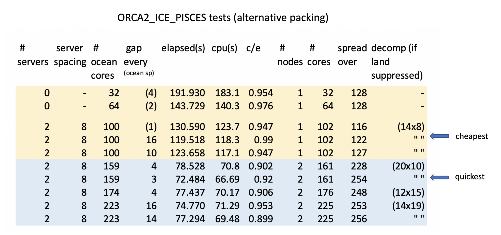
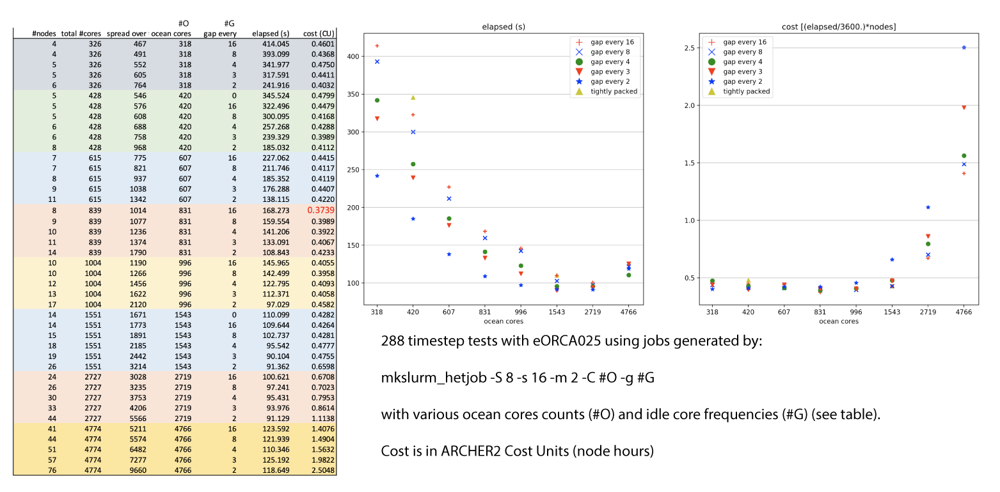

NEMO
NEMO (Nucleus for European Modelling of the Ocean) is a state-of-the-art framework for research activities and forecasting services in ocean and climate sciences, developed in a sustainable way by a European consortium.
Useful Links
- The NEMO home page https://www.nemo-ocean.eu
- NEMO documentation https://forge.ipsl.jussieu.fr/nemo/chrome/site/doc/NEMO/guide/html/NEMO_guide.html
- NEMO users' area http://forge.ipsl.jussieu.fr/nemo/wiki/Users which includes information on obtaining and downloading the latest source code releases.
NEMO is released under a CeCILL license and if freely available to all users on ARCHER2.
Using NEMO on ARCHER2
A central install of NEMO is not appropriate for most users of ARCHER2 since many configurations will want to add bespoke code changes. There is, however, a case for providing some central material specific to ARCHER2. This includes: arch files for compiling on ARCHER2; a pre-compiled version of XIOS and guides for running NEMO on ARCHER2. The guides provided here address the running of NEMO as a stand-alone ocean model (albeit with optional sea-ice and external XIOS i/o servers ) and provide links to some of the material held in the shared workspace of the n01 (oceans and shelf seas) consortium. The running of full Earth System Models with NEMO as just one component of a fully interacting, OASIS-coupled, suite is best dealt with by more comprehensive workflow management systems such as the Rose and Cylc set-up used by NCAS.
Setting up the correct environment
The first point of note is that NEMO will not operate successfully in the default environment on ARCHER2. To be precise, this statement is true for any attempts to run NEMO as part of a MPMD task with external XIOS servers. In attached mode, where no external servers are used and every ocean process acts as an io server, then the default environment can be used to launch NEMO as a SPMD task. Since attached mode is not performant at high core counts it is advisable to standardise on on environment which is suitable for all NEMO applications. This is currently:
- Either (starting from the default environment):
module unload cray-mpich
module load craype-network-ucx
module load cray-mpich-ucx
module load libfabric
module load cray-hdf5-parallel
module load cray-netcdf-hdf5parallel
module load gcc
module -s restore /work/n01/shared/acc/n01_modules/ucx_env
If your NEMO tasks are failing at start-up (or possibly hanging) then the chances are you are attempting to use the wrong mpich library. Note all investigations to date have focussed on using the Cray compilers.
Enabling FCM to compile in parallel with Cray compilers
FCM is bundled with both NEMO and XIOS and is used by makenemo and make_xios scripts These scripts accept –j N/-jobs N arguments for parallel builds but the Cray compilers trip up attempting to load modules which have only just been built. It seems to be a timing issue because if the -J option is added to inform the compiler where to look for modules the problem disappears. The -J option should not be necessary because the -I setting is already given and, according to the manual, directories given by -J are searched first followed by those given by -I. The slight difference in priority seems to matter though and parallel builds will fail with the Cray compilers unless the following change is made to:
NEMO/r4.0.X/ext/FCM/lib/Fcm/Config.pm (NEMO4 source tree)
and (if compiling xios, not everyone needs to do this, see next section)
xios-2.5/tools/FCM/lib/Fcm/Config.pm (may need to run make_xios once to unpack this)
In both cases change:
FC_MODSEARCH => '', # FC flag, specify "module" path
to
FC_MODSEARCH => '-J', # FC flag, specify "module" path
Compiling XIOS and NEMO
It is not necessary for everyone to compile XIOS. A compiled version is available in:
/work/n01/shared/acc/xios-2.5
./make_xios --prod --arch X86_ARCHER2-Cray --netcdf_lib netcdf4_par --job 16 --full
/work/n01/shared/acc/xios-2.5/arch/arch-X86_ARCHER2-Cray.[env,fcm,path] settings
The NEMO arch file suggested at the next step will link nemo with the xios libraries contained therein and copies of the xios_server.exe executable can be taken from the xios-2.5/bin directory. It is recommended to take copies of this executable to guard against any possible issues with future updates.
NEMO can be compiled with (for example):
./makenemo -n ORCA2_ICE_PISCES_ST -r ORCA2_ICE_PISCES -m X86_ARCHER2-Cray -j 16
/work/n01/shared/acc/arch-X86_ARCHER2-Cray.fcm
-em -s integer32 -s real64 -O1 -hflex_mp=intolerant
Small gains at higher optimisation levels are offset by much longer compile times and an inability to attain restartability and reproducibility passes in some of the standard SETTE tests. Future releases of NEMO (post r4.0.4) will contain this arch file for ARCHER2. Users of versions 4.0.4 and earlier will have to manually add this file.
Building a run script
Note
The following 5 sections describe an evolving approach to running NEMO on ARCHER2 that culminated in the recommended method described in the last section: Running heterogeneous jobs. If you are not interested in the details of how this solution was reached, skip straight to that final section.
Most NEMO applications will want to run in detached mode with separate XIOS servers. Remember this is only currently possible using the cray-mpich-ucx module. MPMD jobs are more complex to set-up than on ARCHER; but also more versatile since executables can be mixed on a node. Generally, xios_servers will need to be more lightly packed than NEMO cores because:
- xios servers have less consistent memory requirements than the ocean cores
- They generally require more memory and their needs can spike depending on output interval or experimental needs
- There are far fewer of them than ocean cores so a pragmatic solution might be to assign each xios_server an entire NUMA region of its own
- It also makes sense to avoid concentrating too many xios_servers on any particular node
- Very large models may require xios_servers to occupy more than one NUMA (TBD)
All this can be achieved using the:
–cpu-bind=map_cpu:<cpu map>
/work/n01/shared/acc/mkslurm
The mkslurm script
usage: mkslurm [-S num_servers] [-s server_spacing] [-m max_servers_per_node]
[-C num_clients] [-c client_spacing]
[-t time_limit] [-a account] [-j job_name]
For example, to run with 4 xios servers (a maximum of 2 per node), each with sole occupancy of a 16-core NUMA region and 96 ocean cores, spaced with an idle core in between each, use:
./mkslurm -S 4 -s 16 -m 2 -C 96 -c 2 > myscript.slurm
Running: mkslurm -S 4 -s 16 -m 4 -C 96 -c 2 -t 00:10:00 -a n01 -j nemo_test
nodes needed= 2 (256)
cores to be used= 100 (256)
Running parallel NEMO jobs
The script produced is:
#!/bin/bash
#SBATCH --job-name=nemo_test
#SBATCH --time=00:10:00
#SBATCH --nodes=2
#SBATCH --ntasks=100
#SBATCH --account=n01
#SBATCH --partition=standard
#SBATCH --qos=standard
export OMP_NUM_THREADS=1
module restore /work/n01/shared/acc/n01_modules/ucx_env
#
cat > myscript_wrapper2.sh << EOFB
#!/bin/ksh
#
set -A map ./xios_server.exe ./nemo
exec_map=( 0 0 1 1 1 1 1 1 1 1 1 1 1 1 1 1 1 1 1 1 1 1 1 1 1 1 1 1 1 1 1 1 1 1 1 1 1 1 1 1 1 1 1 1 1 1 1 1 1 1 0 0 1 1 1 1 1 1 1 1 1 1 1 1 1 1 1 1 1 1 1 1 1 1 1 1 1 1 1 1 1 1 1 1 1 1 1 1 1 1 1 1 1 1 1 1 1 1 1 1 )
#
exec \${map[\${exec_map[\$SLURM_PROCID]}]}
##
EOFB
chmod u+x ./myscript_wrapper2.sh
#
srun --mem-bind=local --cpu-bind=v,map_cpu:00,0x10,0x20,0x22,0x24,0x26,0x28,0x2a,0x2c,0x2e,0x30,0x32,0x34,0x36,0x38,0x3a,0x3c,0x3e,0x40,0x42,0x44,0x46,0x48,0x4a,0x4c,0x4e,0x50,0x52,0x54,0x56,0x58,0x5a,0x5c,0x5e,0x60,0x62,0x64,0x66,0x68,0x6a,0x6c,0x6e,0x70,0x72,0x74,0x76,0x78,0x7a,0x7c,0x7e,00,0x10,0x20,0x22,0x24,0x26,0x28,0x2a,0x2c,0x2e,0x30,0x32,0x34,0x36,0x38,0x3a,0x3c,0x3e,0x40,0x42,0x44,0x46,0x48,0x4a,0x4c,0x4e,0x50,0x52,0x54,0x56,0x58,0x5a,0x5c,0x5e,0x60,0x62,0x64,0x66,0x68,0x6a,0x6c,0x6e,0x70,0x72,0x74,0x76,0x78,0x7a,0x7c,0x7e, ./myscript_wrapper2.sh
which will run the desired MPMD job providing the xios_server.exe and nemo executables are in the directory that this script is submitted from. The exec_map array shows the position of each executable in the rank list (0=xios_server.exe, 1=nemo). The cpu map gives the hexadecimal number of the core that will run that executable. For larger core counts the cpu_map can be limited to a single node map which will be cycled through as many times as necessary until all the tasks are mapped.
Some preliminary tests
This table shows the results of a repeated 60 day simulation of the ORCA2_ICE_PISCES, SETTE configuration using various core counts and packing strategies:

Alternative placement strategies
It is clear from the previous results that fully populating an ARCHER2 node is unlikely to provide the optimal performance for any codes with moderate memory bandwidth requirements. The regular packing strategy offered by mkslurm does not allow experimentation with less wasteful packing strategies than half-population though.
There may be a case, for example, for just leaving every 1 in 4 cores idle, or every 1 in 8, or even fewer idle cores per node. The mkslurm_alt script (/work/n01/shared/acc/mkslurm_alt) provides a method of generating cpu-bind maps for exploring these strategies.
The script assumes no change in the packing strategy for the servers but the core spacing argument (-c) for the ocean cores is replaced by a -g option representing the frequency of a gap in the, otherwise tightly-packed, ocean cores. A -v option has also been introduced to provide a human-readable indication of the core usage. I.e.:
usage: mkslurm_alt [-S num_servers] [-s server_spacing] [-m max_servers_per_node]
[-C num_clients] [-g client_gap_interval] [-t time_limit]
[-a account] [-j job_name] [-v]

Tests with alternative packing strategies
Preliminary tests have been conducted with the ORCA2_ICE_PISCES SETTE test case. This is a relatively small test case that will fit onto single node. It is also small enough to perform well in attached mode. First some baseline tests in attached mode. For 32 and 64 core tests, these are equivalent to running a mkslurm-generated script with -S 0 and -C 32 -c 4 and -C 64 -c 2, respectively:

Previous tests used 4 I/O servers each occupying a single NUMA. For this size model, 2 servers occupying half a NUMA each will suffice. That leaves 112 cores with which to try different packing strategies.
Is it possible to match or better this elapsed time on a single node including external I/O servers? -Yes! -but not with an obvious gap frequency:

And activating land suppression can reduce times further:

The optimal two-node solution is also shown (this is quicker but the one node solution is cheaper).
Running heterogeneous jobs
There is a critical limitation to the techniques described so far for placing tasks on the ARCHER2 nodes. That is that the cpu map generated by the mkslurm and mkslurm_alt scripts is only applied as expected if the layout is identical on every node. In general, this is not the case for larger NEMO configurations because:
- We may only want server processes (possibly mixed with ocean processes) on an initial subset of nodes
- followed by a set of fully utilised (albeit, possibly, with regular gaps) nodes of only ocean processes
- followed (possibly) by a final node with fewer ocean processes
To exercise precise control over the placement in each of these parts will require different cpu maps or masks. This can be achieved by configuring each part as a component of a heterogeneous job-pack. The basic principle is explained here: Heterogeneous jobs
A python-based extension of the mkslurm_alt functionality has been provided to automatically generate such job-scripts. The script is located here:
/work/n01/shared/malmans/mkslurm_hetjob
Arguments to the script match those of mkslurm_alt, i.e.:
usage: mkslurm_hetjob [-h] [-S S] [-s S] [-m M] [-C C] [-g G] [-N N] [-t T]
[-a A] [-j J] [-v]
Python version of mkslurm_alt using HetJob. Server placement
and spacing remains as mkslurm but clients are always tightly packed with a
gap left every "NC_GAP" cores where NC_GAP can be given by the -g argument.
values of 4, 8 or 16 are recommended.
optional arguments:
-h, --help show this help message and exit
-S S num_servers (default: 4)
-s S server_spacing (default: 8)
-m M max_servers_per_node (default: 2)
-C C num_clients (default: 28)
-g G client_gap_interval (default: 4)
-N N ncores_per_node (default: 128)
-t T time_limit (default: 00:10:00)
-a A account (default: n01)
-j J job_name (default: nemo_test)
-v show human readable hetjobs (default: False)
The use of this script to generate job scripts for most nemo, ocean-only runs is recommended. Note a tightly-packed placement with no gaps amongst the ocean processes can be generated using a client gap interval greater than the number of clients. This script has been used to explore the different placement strategies with a larger configuration based on eORCA025. In all cases, 8 XIOS servers were used, each with sole occupancy of a 16-core NUMA and a maximum of 2 servers per node. The rest of the initial 4 nodes (and any subsequent ocean core-only nodes) were filled with ocean cores at various packing densities (from tightly packed to half-populated). A summary of the results are shown below.

The limit of scalability for this problem size lies around 1500 cores. One interesting aspect is that the cost, in terms of node hours, remains fairly flat up to a thousand processes and the choice of gap placement makes much less difference as the individual domains shrink. It looks as if, so long as you avoid inappropriately high numbers of processors, choosing the wrong placement won't waste your allocation but may waste your time.
Note
This information is based on experience during early user testing and is subject to change